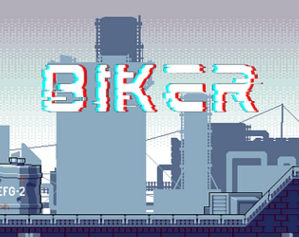
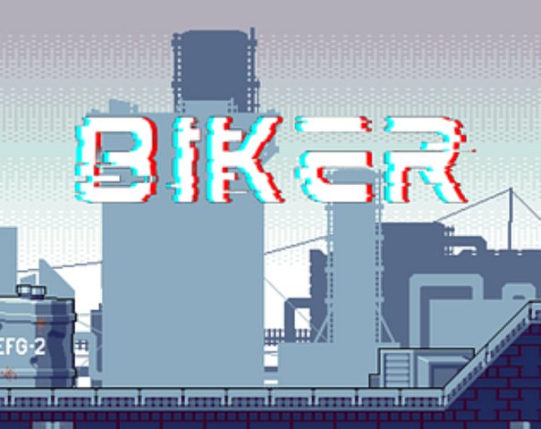

I am passionate about Games. I studied Computer Science and Game Engineering as an undergrad and have five years of experience in Game Development. I have four years of game engineering experience, fluently utilizing C# and UE Blueprint with Unity and Unreal Engine to create game content. I’m familiar with the game development process, and proficient in C++, C#, Java, and Python. I’m familiar with technical art pipelines and know how to arrange the work of Modeling, Texturing, Environment, Shader(URP), and Motion Capture, hence can arrange Engineers and ArtWork with a solid pipeline understanding.
I study Game Production MEAE and am a professional in creating a highly motivated and friendly team. I’m able to find hidden threats in the current arrangement and modify the plan to resolve them. I have six years of experience with project management with teams, including activity design, management tools, and communication. I also have experience with design, including narrative design, level design, system design, etc.
Design & Documentation:
Narration Design
Level Design
Battle Design
______________________
Dramatic Writing:
Final Draft
______________________
Video Editing:
Adobe Premiere
Adobe Photoshop
Adobe After Effects
Game Engine:
Unity 3D Engine
Unreal Engine 4 & 5
______________________
Coding Language:
C++
C#
Java
Python
HTML5
CSS3
Unreal Engine Blueprint
______________________
Modeling:
Autodesk Revit
Autodesk Fusion 360
Autodesk Maya
ZBrush
______________________
Computer Grahics: OpenGL
Database: PostgraSQL, MySQL
Project Management:
Jira
Trello
______________________
Music Production:
Music Keyboard
Music Theory
Classical Piano
Drum
FL Studio
______________________
Finance for Game Production
Activity Design
Communication
Event Design and Hosting
I have experience in multiple projects, participating or leading them as a Game Producer, Engineer, and Designer.
As a Game Producer, I help the team create Jira Boards to track tasks and deadlines. I also schedule and lead the team meetings, writing different documents including meeting summaries and design docs. Soft skills such as communication and event hosting are also included in this process. I also do projects release and make trailers for games.
As a Game Engineer, I visualize functionalities professionally with Unity Engine and fluently with Unreal Engine.
All the Video Game Projects are published on my Personal Itch.io Page.

 



In the early stage of this research, I participated in formulating the research direction and experiment methods, selected three different game types (platformer, space shooting, roguelike), participated in the development of three basic templates, and determined the core gameplay. Human decision-making and AI decision-making are carried out respectively for gameplay design, skill design, level design, game feel design, code writing, and bug fixing. There is no human intervention in AI decisions however if the AI cannot fix the bug, I need to generate a report and manually fix it.
After the development of six games, I participated in the design of experimental questionnaires, collected data, and conducted data analysis. I was responsible for leading the writing of the content related to the use of AI during the development period in the research paper, and I participated in writing and revising the rest of the content.
This paper discusses how generative AI affects the current game industry, analyzes and investigates the efficiency of generative AI when participating in the game design and development process, and discusses how the current generative AI (ChatGPT 4.0 is used as an example in the paper) can participate in the game development process better. This paper was completed in collaboration with Associate Professor Julian Togelius, PhD student M Charity, and graduate student Asad Anjum of New York University's Artificial Intelligence and Games.
I got a Bachelor of Science in Computer Science from New York University Tandon School of Engineering, meanwhile, I was studying Game Engineering as a minor at the same time.
After graduating from New York University, I am studying for a Master of Entertainment Arts & Engineering in Production Track at the University of Utah.
I also studied both pop and classical music for over 10 years, including piano performance and pop music composition. Hence, I’m also able to do SFX and Music compose for Game.
I’m familiar with Event design and hosting as well. I was highlighted for team formation and communication throughout the project experience in both NYU and Utah.
Starting from High School, I want to be part of the Game Industry for the future. During that time period, I was making different board games and narrative games and hosting school events for that. But there is always one question in my mind: How do Video Games work?
That’s why I am studying computer science at my college, and I also applying and complete the minor or Game Engineering. Throughout the study journey at NYU, I learned different basic computer science skills, such as coding language, structures, algorithms, computer graphics, databases, etc. Meanwhile, I also learned how to implement a game with Game Engine.
Here, I learned all the basics knowledge and pipelines of how to make video games!
BS - Computer Science
After graduating from NYU, I was facing two options: to keep studying for a master's degree or go to a career. I the enough knowledge in computer science, but I wish to learn more about how a Game is made, starting from preproduction to release. If I go career directly, I’ll just practice more in coding but will not gain the knowledge of entire Game production, hence I applied for the University of Utah MEAE program Production Track.
The reason why I was attracted to the University of Utah is that different tracks will cooperate to conduct different prototypes, hence it will give me a clearer view of how a game is made, including art pipeline and design cycle. As in the production track, I also learned project management and communication skills, which will benefit my future career.
I’m currently in my 1st year of study at the University of Utah and will graduate in 2026 Spring Semester.
MEAE - Game Production
Email:
yutingli.justin@gmail.com
Discord:
lightingmagic
Wechat:
liyuting010307
Instagram:
justinli35
LinkedIn:
YUTING (Justin) LI
Handshake:
Justin Li
Itch.io Portfolio:
Justin Itch
This website is a self-made HTML/CSS project. Source code can be found here:
Credit to myself